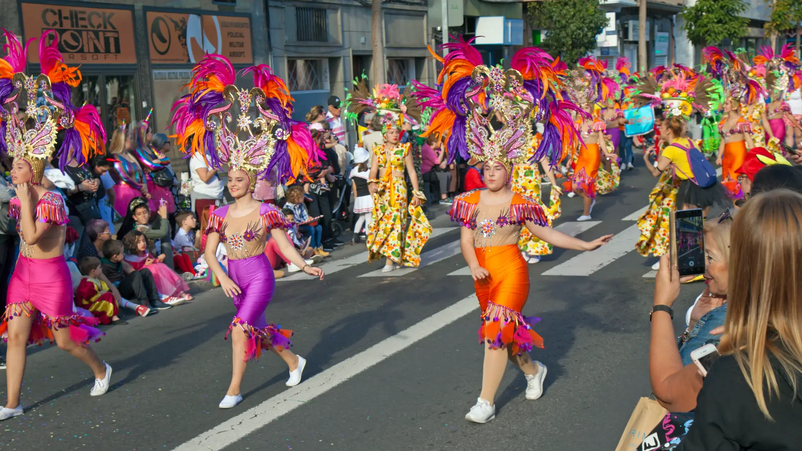

Carnavales de Gran Canaria 2026
Los Carnavales de Gran Canaria 2026 se celebrarán del 14 de febrero al 1 de marzo.
Este evento anual es uno de los más importantes de la isla, conocido por sus coloridos desfiles,
disfraces elaborados y una atmósfera festiva que atrae a miles de visitantes cada año.

Fechas Importantes
- 14 de febrero: Inicio del Carnaval
- 21 de febrero: Gran Desfile de Carnaval
- 28 de febrero: Noche de la Gala Drag Queen
- 1 de marzo: Clausura del Carnaval
Actividades Destacadas
- Desfiles temáticos con comparsas y carrozas.
- Concursos de disfraces para todas las edades.
- Conciertos y actuaciones en vivo.
- Eventos gastronómicos con comida típica canaria.